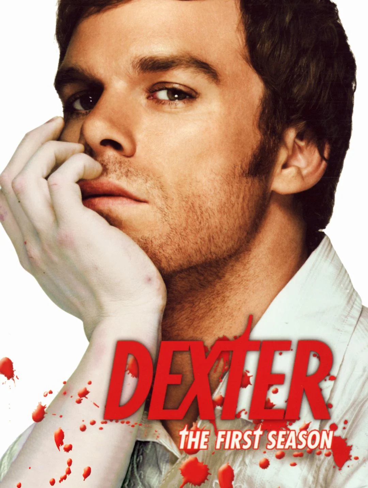
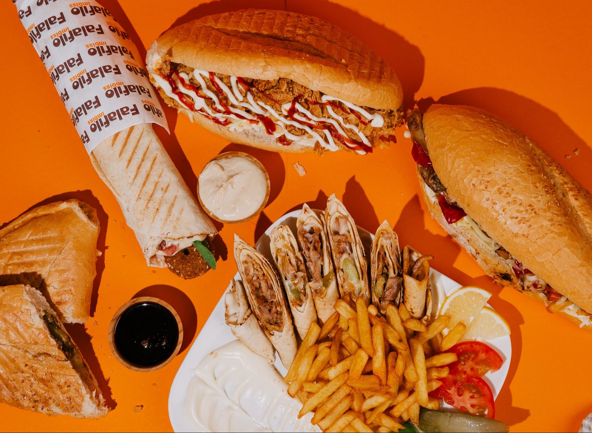
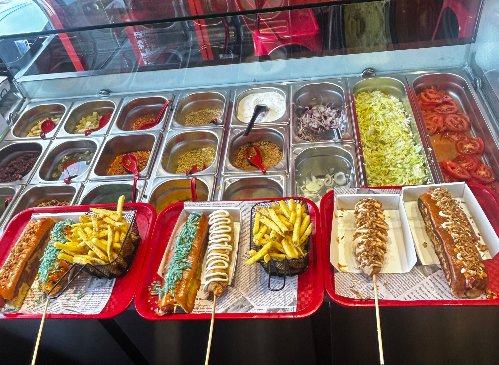
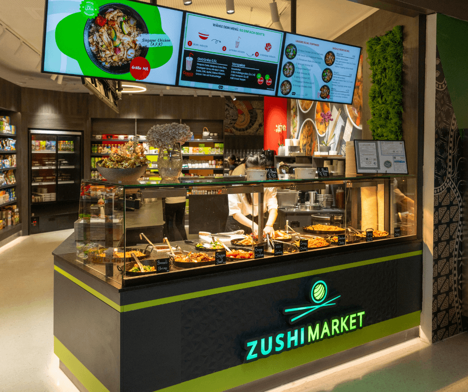

Über mich
Name: Can Özcetin
Alter: 19
Wohnort: Wien 1110
Hobby: Schwimmen, MMA, Wandern
Meine derzeitige Lieblingsserie
Titel: Dexter
Die Serie ist einfach nur krass
Meine Top 3 Foodspots in Wien
Falafilo
Falafilo spezialisiert sich hauptsächlich auf deren Shawarma und Falafel zwei extrem leckere Gerichte aus dem Arabischen
Quellenstraße 143, 1100 Wien
Streetdogs
Streetdogs ist ein kleiner Laden der sehr vieles an Gerichten anbietet. Burger, Hotdogs, Corndogs und Desserts. Meine Top Empfehlung ist auf jeden Fall die Burger und die Corndogs. Extrem Lecker.
Favoritenstraße 76/2/3, 1100 Wien
Zushimarket
ZushiMarket ist eine Asiatische Küche. Es gibt viele Filialen die was anderes anbieten. Ein All you can eat Buffet, eine custom Bowl wo du dir aussuchst was reinkommt und ein Running Sushi. Für mich der beste Ort wenn man Lust auf die Asiatische Küche hat.
Handelskai 94-96, 1200 Wien